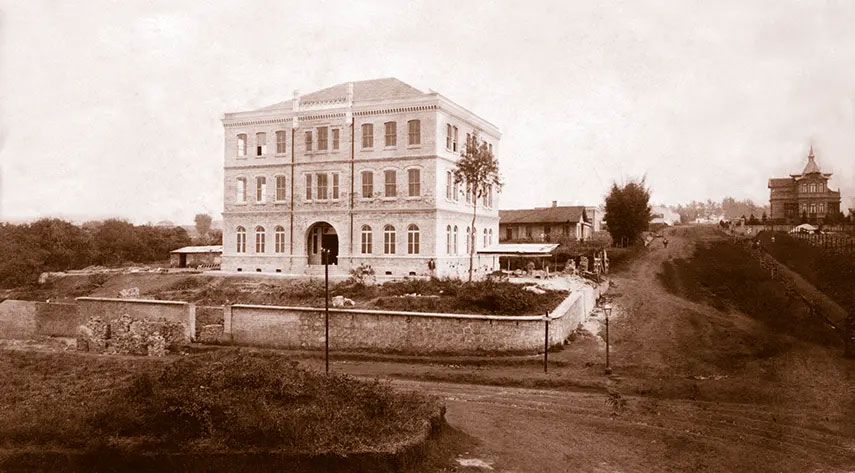
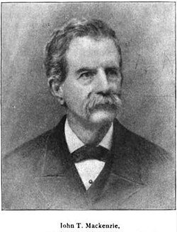

O Centro de Memória Mackenzie reúne, organiza, preserva e disponibiliza documentos, fotografias, publicações e objetos que registram a trajetória da Universidade Presbiteriana Mackenzie desde sua fundação.
"A memória é o caminho que nos permite compreender quem somos e para onde podemos ir."
Nosso acervo é fonte essencial para pesquisadores, alunos, professores e todos que desejam conhecer a história da educação presbiteriana e da própria cidade de São Paulo.
Documentos originais, registros fotográficos e publicações que narram décadas de história
Atas, correspondências, relatórios e registros administrativos desde a fundação da instituição em 1870.
Mais de 5.000 fotografias que registram eventos, formandos, obras e a vida cotidiana do Mackenzie.
Revistas, jornais, anuários e livros institucionais que documentam a produção intelectual da universidade.
Históricos escolares, diplomas e registros de alunos e docentes ao longo de mais de um século de ensino.
Plantas arquitetônicas e mapas que mostram a evolução do campus e das instalações ao longo das décadas.
Entrevistas e depoimentos de ex-alunos, professores e funcionários que vivenciaram momentos marcantes.
Uma trajetória construída ao longo de mais de 150 anos de educação e transformação

George Chamberlain e Mary Chamberlain fundam a Escola Americana em São Paulo, semente do Mackenzie.

A instituição passa a se chamar Instituto Mackenzie em homenagem ao filantropo americano John T. Mackenzie.
O Mackenzie recebe o reconhecimento federal como universidade, consolidando décadas de excelência acadêmica.
Incorpora à denominação o vínculo com a Igreja Presbiteriana do Brasil, reafirmando seus valores fundadores.
Use inteligência artificial para pesquisar no acervo, tirar dúvidas sobre a história do Mackenzie e descobrir documentos e registros históricos relevantes.